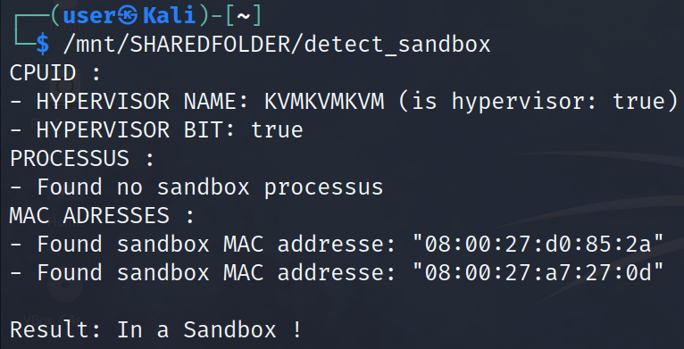
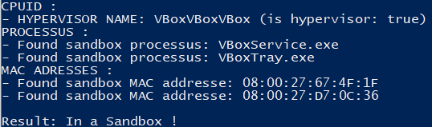
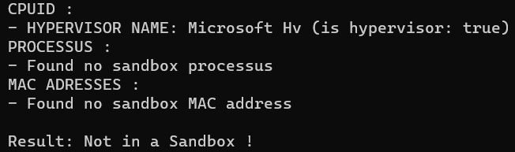

In this section, we'll look at a few methods for detecting whether our malware has been launched in a sandbox.
By sandbox we mean a virtual machine or a system with analysis tools such as Wireshark or process explorer.
Detection methods are as follows:
We'll look at how to implement each method on Linux and Windows, in the same program, using the #[cfg()] macro.
In this method, we have a list of processes currently present in a sandbox that we wish to search for in the list of running processes.
On Linux, we use the following process list (in src/processus.rs):
#[cfg(target_os = "linux")]
const SANDBOX_PROCESSES: [&str; 18] = [
// vitual-box
"vmtools",
"vboxservice",
"vbox",
"vboxtray",
"vboxclient",
// vmware
"vmware",
"vmsrvc",
"vmvss",
"vmrawdsk",
"vmusbmouse",
"vmscsi",
"vmxnet",
"vmx_svga",
"vmmemctl",
"vmhgfs",
// others
"wireshark",
"tshark",
"fiddler",
];
You can see that there are processes linked to VirtualBox and VMware, as well as Wireshark and Fiddler.
The following code retrieves the current processes, the command that launched them and compares them to the list above:
#[cfg(target_os = "linux")]
// Linux version
pub fn processus_check() -> bool {
let mut count_processus_sandbox = 0;
let pid_dirs = fs::read_dir("/proc").unwrap();
for dir_raw in pid_dirs {
if dir_raw.is_err() {
continue;
}
let dir = dir_raw.unwrap();
let dir_pid = dir.file_name().to_str().unwrap().parse::<u32>();
if dir_pid.is_err() {
// filters out non-PID files
continue;
}
let dir_pid = dir_pid.unwrap();
match fs::read(format!("/proc/{}/comm", dir_pid)) {
Ok(res) => {
let comm_raw = String::from_utf8(res).unwrap();
let comm = comm_raw.strip_suffix('\n').unwrap();
if SANDBOX_PROCESSES.contains(&comm.to_lowercase().as_str()) {
count_processus_sandbox += 1;
println!("- Found sandbox processus: {}", comm);
}
}
Err(_) => continue,
}
}
if count_processus_sandbox == 0 {
println!("- Found no sandbox processus")
}
return count_processus_sandbox > 0;
}
As you can see, process information is retrieved using the /proc file system. This contains process PIDs in the form of folders, and in each of these folders we have the comm file containing the command used to launch the process.
For optimal detection, we'll compare process names at the bottom of the case:
if SANDBOX_PROCESSES.contains(&comm.to_lowercase().as_str()) {
count_processus_sandbox += 1;
println!("- Found sandbox processus: {}", comm);
}
On Windows, we'll use the following process list:
#[cfg(target_os = "windows")]
const SANDBOX_PROCESSES: [&str; 20] = [
// vitual-box
"vmtools.exe",
"vboxservice.exe",
"vboxtray.exe",
// vmware
"vmsrvc.exe",
"vmvss.exe",
"vmrawdsk.exe",
"vmusbmouse.exe",
"vmscsi.exe",
"vmxnet.exe",
"vmx_svga.exe",
"vmmemctl.exe",
"vmhgfs.exe",
// others
"wireshark.exe",
"tshark.exe",
"tcpview.exe",
"fiddler.exe",
// windows specific
"visual basic.exe",
"process explorer.exe",
"autoit.exe",
"df5serv.exe",
];
This list includes guest additions for VirtualBox and VMware, as well as tools such as tcpview and process explorer.
The program to retrieve the process list and compare it with the list above is as follows:
#[cfg(target_os = "windows")]
// Windows version
pub fn processus_check() -> bool {
let toolhelp_snapshot_process: HANDLE;
unsafe {
// retrieves a snapshot of the process list
toolhelp_snapshot_process = match CreateToolhelp32Snapshot(TH32CS_SNAPPROCESS, 0) {
Err(e) => {
println!("Error: {}", e);
return false;
}
Ok(v) => v,
};
}
let mut process_entry = PROCESSENTRY32 {
dwSize: mem::size_of::<processentry32>() as u32,
cntUsage: 0,
th32ProcessID: 0,
th32DefaultHeapID: 0,
th32ModuleID: 0,
cntThreads: 0,
th32ParentProcessID: 0,
pcPriClassBase: 0,
dwFlags: 0,
szExeFile: [0; MAX_PATH as usize],
};
unsafe {
// retrieves the first process in the list
if let Err(e) = Process32First(toolhelp_snapshot_process, &mut process_entry) {
println!("Error: {}", e);
CloseHandle(toolhelp_snapshot_process).unwrap();
return false;
}
}
let mut count_processus_sandbox = 0;
loop {
let len = process_entry
.szExeFile
.iter()
.position(|&r| r == 0)
.unwrap();
let proc_name_str = std::str::from_utf8(&process_entry.szExeFile[0..len]).unwrap();
if SANDBOX_PROCESSES.contains(&proc_name_str.to_lowercase().as_str()) {
println!("- Found sandbox processus: {}", proc_name_str);
count_processus_sandbox += 1;
}
unsafe {
if Process32Next(toolhelp_snapshot_process, &mut process_entry).is_err() {
break;
}
}
}
if count_processus_sandbox == 0 {
println!("- Found no sandbox processus")
}
return count_processus_sandbox > 0;
}
This function works as follows:
CreateToolhelp32Snapshot is used, with the constant TH32CS_SNAPPROCESS as parameter. This function requests a snapshot of the list of processes currently running on the system. The result is stored in the variable toolhelp_snapshot_process as a chained list of PROCESSENTRY32.PROCESSENTRY32 structure is created, which will contain information on a process. This structure will be successively filled with values from the previously returned chained list.Process32First function to retrieve the first value from the chained list and place it in the process_entry variable.Process32Next function to retrieve the next process in process_entry. If Process32Next returns an error, this indicates that the end of the list of running processes has been reached.To detect whether we're in a virtual machine, we're going to use the fact that the first 3 bytes of a MAC address identify the card designer. This identifier is called the Organizationally Unique Identifier or OUI, and the list of OUI's is publicly available (Wireshark has a page for searching this list).
In this case, we'll use the following OUI list for Windows and Linux:
const SANBOX_MAC_ADDRESSES: [&str; 5] = [
"00:0C:29", "00:1C:14", "00:50:56", "00:05:69", // VMware OUI
"08:00:27", // VirtualBox OUI
];
On Linux, we can retrieve the list of interfaces on a machine using the /sys/class/net file system. In this folder we have a folder for each interface, and in each of these folders is the address file, which contains the MAC address of the interface.
Here's the function that reads MAC addresses and compares them with the list defined above:
#[cfg(target_os = "linux")]
pub fn mac_addresses_check() -> bool {
let mut count_sandbox_mac = 0;
let ifaces_dirs = match std::fs::read_dir("/sys/class/net/") {
Err(e) => {
println!("Error: {}", e);
return false;
}
Ok(v) => v,
};
for iface_dir in ifaces_dirs {
if iface_dir.is_err() {
continue;
}
let iface_dir = iface_dir.unwrap();
let iface = iface_dir.file_name();
let iface = iface.to_str().unwrap();
match std::fs::read(format!("/sys/class/net/{}/address", iface)) {
Ok(res) => {
let addr_raw = String::from_utf8(res).unwrap();
let addr = addr_raw.strip_suffix('\n').unwrap();
if SANBOX_MAC_ADDRESSES.contains(&addr.get(0..8).unwrap()) {
println!("- Found sandbox MAC addresse: {:?}", addr);
count_sandbox_mac += 1;
}
}
Err(_) => continue,
}
}
if count_sandbox_mac == 0 {
println!("- Found no sandbox MAC address")
}
return count_sandbox_mac > 0;
}
This function reads the folders in /sys/class/net to retrieve the interfaces, extracts the address of each of them and checks whether the first 3 bytes are in the previous MAC list.
The Windows API makes it easy to retrieve the list of network interfaces using the GetAdaptersInfo function. This function returns a chained list of IP_ADAPTER_INFO containing interface information (including MAC address).
Here's the code using this function:
#[cfg(target_os = "windows")]
pub fn mac_addresses_check() -> bool {
let mut count_sandbox_mac: u32 = 0;
let mut out_buf_len = std::mem::size_of::<IP_ADAPTER_INFO>() as u32;
let mut raw_adaptor_mem: Vec<u8> = Vec::with_capacity(out_buf_len as usize);
unsafe {
if GetAdaptersInfo(
Some(raw_adaptor_mem.as_mut_ptr() as *mut IP_ADAPTER_INFO),
&mut out_buf_len,
) == ERROR_BUFFER_OVERFLOW.0
{
// retrieves the size needed to retrieve adapters
raw_adaptor_mem = Vec::with_capacity(out_buf_len as usize);
let res = GetAdaptersInfo(
Some(raw_adaptor_mem.as_mut_ptr() as *mut IP_ADAPTER_INFO),
&mut out_buf_len,
);
if res != ERROR_SUCCESS.0 {
let mut err_msg_buffer: Vec<u8> = Vec::with_capacity(MAX_PREFERRED_LENGTH as usize);
FormatMessageA(
FORMAT_MESSAGE_FROM_SYSTEM | FORMAT_MESSAGE_IGNORE_INSERTS,
None,
res,
0,
PSTR {
0: err_msg_buffer.as_mut_ptr(),
},
MAX_PREFERRED_LENGTH as u32,
None,
);
println!(
"Error: {}",
CStr::from_ptr(err_msg_buffer.as_mut_ptr() as *const i8)
.to_str()
.unwrap()
);
return false;
}
}
}
let mut iface: *mut IP_ADAPTER_INFO = unsafe { std::mem::transmute(&raw_adaptor_mem) };
// looks up the MAC address of each adapter in the chained list
while iface as u64 != 0 {
let address = unsafe { (*iface).Address };
if SANBOX_MAC_ADDRESSES
.contains(&format!("{:02X}:{:02X}:{:02X}", address[0], address[1], address[2]).as_str())
{
println!(
"- Found sandbox MAC addresse: {}",
format!(
"{:02X}:{:02X}:{:02X}:{:02X}:{:02X}:{:02X}",
address[0], address[1], address[2], address[3], address[4], address[5]
)
);
count_sandbox_mac += 1;
}
iface = unsafe { (*iface).Next };
}
if count_sandbox_mac == 0 {
println!("- Found no sandbox MAC address")
}
return count_sandbox_mac > 0;
}
The preceding code retrieves the list of interfaces using the GetAdaptersInfo function. If this function returns an error, we display the error message by retrieving it using the FormatMessageA function.
We then go through the chained list of interfaces, retrieving the MAC address from the IP_ADAPTER_INFO structure, and compare the first 3 bytes formatted as strings with the OUI's in the OUI list we're looking for.
The last method in this section uses the CPUID instruction available on x86 and x64 to find out whether the system is virtualized, and if so, the name of the hypervisor.
This instruction retrieves various information about the processor, which is written to the EBC, ECX and EDX registers. The type of information requested is controlled by the EAX register (or RAX on x64, although only the first 32 bits are used).
In this section, we'll retrieve a flag indicating whether the system is virtualized and the name of the hypervisor.
Following tests, these functionalities do not work optimally on Windows. For example, the virtualization flag returns true if a hypervisor is present on the system, regardless of whether the system is virtualized or not, and is therefore only used on Linux.
As this method uses information provided by the processor, its implementation functions are not OS-dependent.
The virtualization flag is present at the 31st bit of RCX with RAX set to 1 when calling CPUID.
Here's the function that retrieves the virtualization flag:
fn check_is_run_in_hypervisor() -> bool {
let mut res: u64;
unsafe {
asm!(
"xor rcx, rcx",
"mov rax, 0x1",
"cpuid",
"mov r8, rcx",
out("r8") res,
);
}
let hypervisor_bit = (res >> 31) & 0x1 == 1;
println!("- HYPERVISOR BIT: {}", hypervisor_bit);
return hypervisor_bit;
}
The following function uses the asm macro to set RAX to 1, using CPUID. To retrieve the value of RCX from this macro, we copy this value into register R8 and retrieve it from variable res with out("r8") res.
Finally, the bit value is retrieved using a Boolean operation.
The RAX value for retrieving the hypervisor name is 0x40000000. The hypervisor name is returned as a small byte in the EBC, ECX and EDX registers.
This feature works differently on Windows: it returns whether a hypervisor is installed on the system, which is often the case after several tests. The hypervisor returned is Hyper-V.
Here's the list of hypervisors we're looking for:
const HYPERVISORS_NAMES: [&str; 13] = [
"bhyve bhyve ",
"KVMKVMKVM\0\0\0",
"TCGTCGTCGTCG",
"Microsoft Hv",
"MicrosoftXTA",
" lrpepyh vr",
"VMwareVMware",
"XenVMMXenVMM",
"ACRNACRNACRN",
" QNXQVMBSQG ",
"GenuineIntel",
"VirtualApple",
"VBoxVBoxVBox",
];
And the function that retrieves the hypervisor name and checks whether it's in the previous list:
fn check_hypervisor_name() -> bool {
let mut part1: u64;
let mut part2: u64;
let mut part3: u64;
unsafe {
asm!(
"mov rax, 0x40000000",
"cpuid",
"mov r8, rbx",
"mov r9, rcx",
"mov r10, rdx",
out("r8") part1,
out("r9") part2,
out("r10") part3,
);
}
// rbx
let tmp = &part1.to_le_bytes()[0..4];
let name = match std::str::from_utf8(tmp) {
Err(_) => return false,
Ok(v) => v,
};
// rcx
let tmp = &part2.to_le_bytes()[0..4];
let name = match std::str::from_utf8(tmp) {
Err(_) => return false,
Ok(v) => format!("{}{}", name, v),
};
// rdx
let tmp = &part3.to_le_bytes()[0..4];
let name = match std::str::from_utf8(tmp) {
Err(_) => return false,
Ok(v) => format!("{}{}", name, v),
};
println!(
"- HYPERVISOR NAME: {} (is hypervisor: {})",
name,
HYPERVISORS_NAMES.contains(&name.as_str())
);
return HYPERVISORS_NAMES.contains(&name.as_str());
}
This code calls CPUID with RAX set to 0x40000000, then retrieves the EBC, ECX and EDX registers from variables part1, part2 and part3 respectively.
Then, for each of these variables, we retrieve its value from the little loop and transform the result into a character string.
We then check whether the result is in the list of hypervisors we're looking for.
Note that on Windows, the name of the installed hypervisor is returned if we are not virtualized.
Using the various functions seen in this section, we have the following program:
fn main() {
println!("CPUID :");
let cpuid_flag: bool = cpuid_check();
println!("PROCESSUS :");
let processus_flag: bool = processus_check();
println!("MAC ADRESSES :");
let mac_adresses_flag: bool = mac_addresses_check();
#[cfg(target_os = "windows")]
if cpuid_flag && (processus_flag || mac_adresses_flag) {
println!("\nResult: In a Sandbox !");
return;
}
#[cfg(target_os = "linux")]
if cpuid_flag || processus_flag || mac_adresses_flag {
println!("\nResult: In a Sandbox !");
return;
}
println!("\nResult: Not in a Sandbox !");
}
As virtualization flag retrieval doesn't always work as expected (giving true if a hypervisor is installed and true if our program is virtualized), the cpuid_check function doesn't use this feature:
pub fn cpuid_check() -> bool {
#[cfg(target_os = "linux")]
return check_hypervisor_name() | check_is_run_in_hypervisor();
#[cfg(target_os = "windows")]
return check_hypervisor_name();
}
What's more, since Windows can return the name of the hypervisor installed without being virtualized, we don't fully trust this feature. We therefore rely on the other features to confirm that we are in a sandbox.
Here are some screenshots of the program running on the various possible environments:
Linux VM: 
Linux barebone:
Windows VM: 
Windows barebone: 